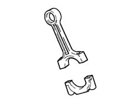
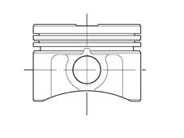
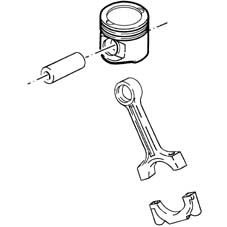
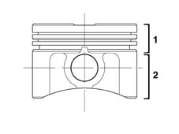
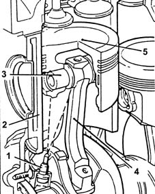
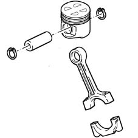
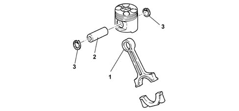
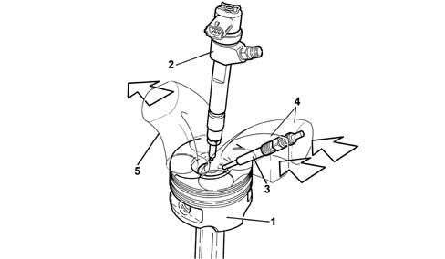

1028H PISTONS AND CONNECTING RODS
- Path
- Descriptions > 10 ENGINE > 1028 PISTONS AND CONNECTING RODS > 1028H PISTONS AND CONNECTING RODS
- Kind
- system description
- Applies to
- engines: 1.2 8v, 1.4 8v, 1.6 16v, 1.3 JTD 16V; all production periods
- Interactive page
- https://sloeber94.github.io/elrnDB-fDbl/en/#/2582278
Applies to: engines: 1.2 8v; all production periods
description of connecting rods
Any rod with joints at the two ends is thus defined.
In the engine, the connecting rods connect the crankshaft and pistons. The part connected to the crankshaft, called the big end, has a rotary movement, while the upper end (small end) has a reciprocating rectilinear movement and is joined to the piston via the gudgeon pin.

COMPOSITION OF CONNECTING RODS
The connecting rods are made from spheroidal graphite cast iron. The gudgeon pins are the fixed type and are an interference fit in the connecting rod.
The connecting rod consists of a body or shank, with a rectilinear axis, which rigidly connects the small end, fixed on the gudgeon pin; and the big end, fixed on the crankpin with bearings interposed.
The big end is divided into two parts for fitting reasons: the fixed part is in one piece with the body and the moving part, called cap, is connected to the former by studs.
As the connecting rod is subjected to compression and combined compressive and bending stresses, it tends to become deformed; consequently the connecting rod body must be made so as to combine light weight with maximum strength, and so it is constructed as a double T section.
The connecting rod is the main connecting element between the piston and the crankshaft.
DESCRIPTION OF PISTON
In the mechanism, called crank gear, which converts the rectilinear motion into rotary motion of the crankshaft, the piston slides reciprocally in the guide, called bore or cylinder.
The top of the piston, or crown, contributes to determining the shape of the combustion chambers. - The part in contact with the cylinder is called skirt, and at the top, it has the grooves for housing the piston rings.
As materials and production technologies are improving, the piston and oil scraper rings have now decreased, and it is likely that in the future they will decrease further.
'Moreover, in racing engines they are already down to two'.

DESCRIPTION OF PISTON
The aluminium-silicon alloy pistons are graded into three sizes; to ensure correct assembly, an arrow is stamped on the crown to show the direction of rotation of the engine.

COMPOSITION OF PISTON
The piston consists of two parts:
- The head (1) or the area containing the piston rings, slightly smaller in diameter than the cylinder to allow for the thermal expansion of the metal.
- The skirt (2) or guide for the small end which supports the side thrust. The skirt contains two bosses for housing the gudgeon pin.

COMPOSITION OF PISTON
These pistons have a steel ring incorporated between the skirt and the head which has the task of preventing the expansion of the skirt in a transverse direction in relation to the gudgeon pin axis.
PISTON OPERATION
This is the component which directly receives the engine impulse from the pressure of the combustion gas, via the connecting rod, and transmits the drive force to the crankshaft.
It should meet to the following requirements:
- high mechanical resistance, which makes it possible to withstand the explosion pressures (~35 kg/cm2) and the dynamic stresses;
- high resistance to heat and wear;
- good thermal conductivity, to transmit heat from the hot area to the cold area underneath;
- light weight and extremely quiet operation, both when cold and when hot.
In order to have low specific pressure at the skirt in the working direction and therefore low consumption, both for the skirt and the cylinder liners, the gudgeon pin should be offset (by about 3% of the bore) in relation to the piston axis, on the opposite side to the direction of rotation.
OIL JETS FOR COOLING THE PISTONS
The diagram below illustrates the position and operation of the oil jets for cooling the pistons.

1, Oil jet
2, Piston bore/liner
3, Connecting rod-piston gudgeon pin
4, Connecting rod
5, Piston
Applies to: engines: 1.6 16v; all production periods
Connecting rods
The connecting rods are made from spheroid cast iron with copper alloy bushes fitted to match wih the piston gudgeon pin.
The floating gudgeon pins are secured by two circlips (3) seated in specific grooves in the piston skirts.
Pistons
The aluminium-silicon alloy pistons are graded into three sizes; to ensure correct assembly, an arrow is stamped on the crown to show the direction of rotation of the engine.
The piston crown is concave and has four notches to prevent interference with the valve heads.

Applies to: engines: 1.3 JTD 16V; all production periods
CONNECTING RODS
The connecting rods are made from hardened and tempered steel, with a copper bush (1) fitted for matching with the gudgeon pin (2).
The floating gudgeon pins are secured by two circlips (3) seated in specific grooves in the piston skirts.

PISTONS
The light aluminium silicon alloy pistons with autothermic inserts are graded in three sizes.
The 'OMEGA' combustion chamber is located in the piston crown to improve combustion.
The gudgeon pin contains a duct through which the oil is sent to the jets, therefore ensuring improved piston cooling.
Two copper alloy bushes are used for attachment to the gudgeon pin.

1 - Piston
2 - Injector
3 - Heater plug
4 - Air inlet
5 - Exhaust gas outlet
Applies to: engines: 1.4 8v; all production periods
CONSTRUCTION specifications
The connecting rods are made from spheriod cast iron. The gudgeon pins are the fixed type and are matched with the connecting rod.

COMPOSITION
The connecting rod comprises a casing or shank, with a rectilinear axis, which rigidly connects the small end, hinged to the gudgeon pin; and the big end, hinged on the crank pin with bearings in between.
The big end is divided into two sections for fitting reasons: the fixed part is in one piece with the casing and the moving part is connected to the former by studs.
Since the connecting rod is subjected to compression and combined compressive and bending stress forces it tends to become distorted; as a result the connecting rod body should be made in such a way as to combine lightness with maximum resistance and is therefore contructed with a double T section.
The connecting rod is the main element connecting the piston with the crankshaft.
CONSTRUCTION SPECIFICATIONS
The pistons are made from silicon aluminium alloy and are divided into three size categories with an arrow stamped on the crown to indicate engine rotation direction to ensure correct installation.
COMPOSITION
The piston comprises two parts:
- Head (1) or area of the piston rings, with a diameter slightly smaller than that of the cylinder to allow the thermal dilation of the metal.
- Skirt (2) or guide for the small end that supports the side thrust. The skirt contains two studs for housing the gudgeon pin.

COMPOSITION
These pistons contain a steel ring incorporated through fusion between the skirt and the head which has the task of preventing the expansion of the skirt in the direction transverse to the gudgeon pin axis.
OPERATION
It is the component that receives the engine impulse directly from the pressure of the combustion gas, via the connecting rod, transmitting the drive force to the crankshaft.
It should meet the following requirements:
- high mechanical resistance that allows it to support the explosion pressures (~35 kg/cm2) and the dynamic stresses;
- good resistance to heat and to wear;
- good thermal conductivity, to transmit the heat from the hot area to the cold area underneath;
- lightness and quiet operation when hot and when cold.
For the specific pressure at the skirt to be low in the working direction and consequently for low consumption for both the skirt and the cylinder liners/bores, the gudgeon pin must be offset (by about 3% of the reaming) in relation to the piston axis, on the opposite side to the direction of rotation.